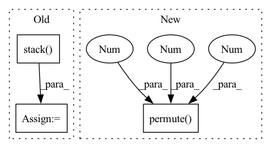

Pattern ID :4258
Before Change
quantiles = self.quantiles
samples = y_pred.size(-1)
quantiles = torch.stack(
[torch.kthvalue(y_pred, int(samples * q), dim=-1)[0] if samples > 1 else y_pred[..., 0] for q in quantiles],
dim=-1,
)
return quantiles
class NormalDistributionLoss(DistributionLoss):After Change
quantiles = [distribution.icdf(quantile) for quantile in quantiles]
except NotImplementedError: // resort to derive quantiles empirically
samples = torch.sort(self.sample(y_pred, 1000), -1).values
quantiles = torch.quantile(samples, torch.tensor(quantiles), dim=2).permute(1 , 2 , 0 )
return quantiles
class NormalDistributionLoss(DistributionLoss):In pattern: SUPERPATTERN
Frequency: 4
Non-data size: 3
Instances Fragment ID: 15508076
Project Name: jdb78/pytorch-forecasting
Commit Name: d96465c514b8bf280fae33f0def40fffb62467dd
Time: 2021-04-11
Author: beitner.jan@bcg.com
File Name: pytorch_forecasting/metrics.py
M Class Name: DistributionLoss
N Class Name: DistributionLoss
M Method Name: to_quantiles(3)
N Method Name: to_quantiles(3)
M Parent Class: MultiHorizonMetric
N Parent Class: MultiHorizonMetric
M File Name: pytorch_forecasting/metrics.py
N File Name: pytorch_forecasting/metrics.py
M Start Line: 944
M End Line: 950
N Start Line: 945
N End Line: 953
Before Change
for i in x:
ss_space.append(cosine_sim(i.t(),i.t()))
ss_channel.append(cosine_sim(i,i))
ss_space = torch.stack( ss_space,0)
ss_space = ss_space.view(ss_space.size(0),ss_space.size(1),height,width) // N, H*W, H, W
ss_channel = torch.stack(ss_channel,0) // N, C, C
// height = x.size(2)
// width = x.size(3)After Change
width = x.size(3)
x = x.view(x.size(0), x.size(1),-1) // N, C, H*W
ss_space = cosine_sim(x.permute(0,2,1),x.permute(0 ,2 ,1 ) )
ss_channel = cosine_sim(x,x)
ss_space = ss_space.view(ss_space.size(0),ss_space.size(1),height,width) // N, H*W, H, W Fragment ID: 15508072
Project Name: haoosz/ffr-net
Commit Name: 0698fd1ed99a6ddfeac8298de736c5ac7421e0b2
Time: 2020-08-29
Author: haoshaozhe@outlook.com
File Name: models/recnet.py
M Class Name: AnonimousClass
N Class Name: AnonimousClass
M Method Name: selfSimilarity(1)
N Method Name: selfSimilarity(1)
M Parent Class:
N Parent Class:
M File Name: models/recnet.py
N File Name: models/recnet.py
M Start Line: 220
M End Line: 228
N Start Line: 220
N End Line: 223
Before Change
p.append(pt)
Mv.append(Mvt)
p = torch.stack( p, dim=1)
Mv = torch.stack(Mv, dim=1)
return p, Mv
After Change
a = torch.tanh(self.a_layer(v))
for et, at, wt in zip(
e.permute(1, 0, 2), a.permute(1, 0, 2), w.permute(1 , 0 , 2 )
):
Mvt = Mvt * (1 - (wt.unsqueeze(-1) * et.unsqueeze(1))) + \
(wt.unsqueeze(-1) * at.unsqueeze(1))
Mv.append(Mvt) Fragment ID: 15508088
Project Name: hcnoh/knowledge-tracing-collection-pytorch
Commit Name: c42b01b83dbe54e94f4294009fbfe8bd910e3638
Time: 2021-10-06
Author: rhc0624@gmail.com
File Name: models/dkvmn.py
M Class Name: DKVMN
N Class Name: DKVMN
M Method Name: forward(3)
N Method Name: forward(3)
M Parent Class: Module
N Parent Class: Module
M File Name: models/dkvmn.py
N File Name: models/dkvmn.py
M Start Line: 40
M End Line: 66
N Start Line: 50
N End Line: 87
Before Change
for channel in channel_paths:
channel_clip = self.kp_loader(channel, frame_indices)
channel_clip = [self.spatial_transform(img) for img in channel_clip]
channel_clip = torch.stack( channel_clip, 0)
clip = torch.cat((clip, channel_clip), dim=1)
clip = clip.permute(1, 0, 2, 3) //change to (C, D, H, W)
return clip
After Change
clip = [torch.cat((clip[i], channel_clip[i]), dim=0) for i in range(len(clip))]
clip = [self.normalize(img) for img in clip]
clip = torch.stack(clip, 0).permute( 1, 0 , 2 , 3 ) //change to (C, D, H, W)
return clip
Fragment ID: 15508064
Project Name: rvl-lab-utoronto/video_similarity_search
Commit Name: 788acf793c6f96886239d558a25a8e84efcb14f9
Time: 2020-08-17
Author: sherrychen127@gmail.com
File Name: datasets/triplets_loader.py
M Class Name: TripletsData
N Class Name: TripletsData
M Method Name: __loading(4)
N Method Name: __loading(4)
M Parent Class: data.Dataset
N Parent Class: data.Dataset
M File Name: datasets/triplets_loader.py
N File Name: datasets/triplets_loader.py
M Start Line: 65
M End Line: 76
N Start Line: 67
N End Line: 80